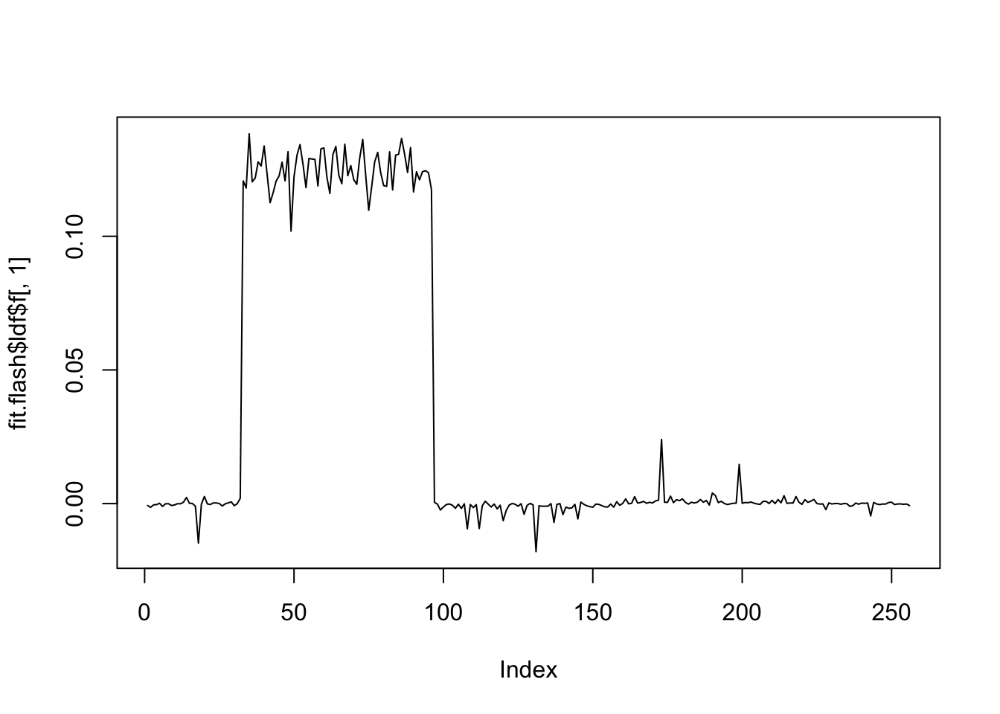
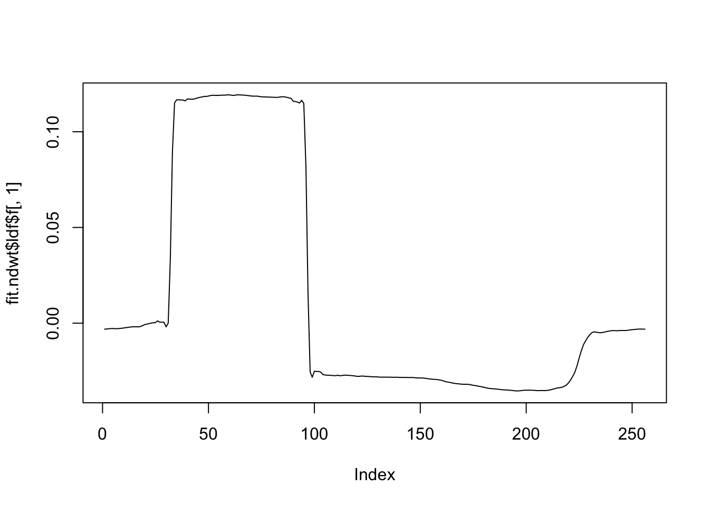

wave flash structure different from flash
Dongyue Xie
2021-11-13
Last updated: 2022-05-04
Checks: 7 0
Knit directory: SMF/
This reproducible R Markdown analysis was created with workflowr (version 1.7.0). The Checks tab describes the reproducibility checks that were applied when the results were created. The Past versions tab lists the development history.
Great! Since the R Markdown file has been committed to the Git repository, you know the exact version of the code that produced these results.
Great job! The global environment was empty. Objects defined in the global environment can affect the analysis in your R Markdown file in unknown ways. For reproduciblity it’s best to always run the code in an empty environment.
The command set.seed(20190719) was run prior to running the code in the R Markdown file. Setting a seed ensures that any results that rely on randomness, e.g. subsampling or permutations, are reproducible.
Great job! Recording the operating system, R version, and package versions is critical for reproducibility.
Nice! There were no cached chunks for this analysis, so you can be confident that you successfully produced the results during this run.
Great job! Using relative paths to the files within your workflowr project makes it easier to run your code on other machines.
Great! You are using Git for version control. Tracking code development and connecting the code version to the results is critical for reproducibility.
The results in this page were generated with repository version 4001d96. See the Past versions tab to see a history of the changes made to the R Markdown and HTML files.
Note that you need to be careful to ensure that all relevant files for the analysis have been committed to Git prior to generating the results (you can use wflow_publish or wflow_git_commit). workflowr only checks the R Markdown file, but you know if there are other scripts or data files that it depends on. Below is the status of the Git repository when the results were generated:
Ignored files:
Ignored: .DS_Store
Ignored: .Rhistory
Ignored: .Rproj.user/
Ignored: analysis/.DS_Store
Ignored: data/.DS_Store
Ignored: data/external_data/
Ignored: output/.DS_Store
Untracked files:
Untracked: analysis/collect_of_examples.Rmd
Untracked: analysis/sparse_smoothing.Rmd
Untracked: code/mr_ash.R
Untracked: data/luis/
Untracked: output/flash_on_cmc2_reduced.rds
Untracked: output/flash_on_cmc2_reduced_2000kb.rds
Untracked: output/luis/
Untracked: output/wave_flash_on_cmc2_reduced_2000kb.rds
Unstaged changes:
Modified: analysis/index.Rmd
Modified: analysis/luis_data.Rmd
Modified: analysis/moma.Rmd
Modified: analysis/smooth_flash.Rmd
Note that any generated files, e.g. HTML, png, CSS, etc., are not included in this status report because it is ok for generated content to have uncommitted changes.
These are the previous versions of the repository in which changes were made to the R Markdown (analysis/waveflash_structure.Rmd) and HTML (docs/waveflash_structure.html) files. If you’ve configured a remote Git repository (see ?wflow_git_remote), click on the hyperlinks in the table below to view the files as they were in that past version.
| File | Version | Author | Date | Message |
|---|---|---|---|---|
| Rmd | 4001d96 | Dongyue Xie | 2022-05-04 | wflow_publish("analysis/waveflash_structure.Rmd") |
Introduction
Explore why there’s different structure between waveflash and flash. Waveflash model is \(YW = LFW + EW\).
library(funflash)
set.seed(12345)
n <- 150
p <- 256
K <- 3
snr <- 1
## Step 1: sample U, an orthogonal matrix
#rand_semdef_sym_mat <- crossprod(matrix(runif(n * n), n, n))
#rand_ortho_mat <- eigen(rand_semdef_sym_mat)$vector[, 1:K]
# u_1 <- rand_ortho_mat[, 1]
# u_2 <- rand_ortho_mat[, 2]
# u_3 <- rand_ortho_mat[, 3]
L = matrix(0,nrow=n,ncol=K)
pi0=1/3
while(sum(rowSums(L)==0)>0){
for(k in 1:K){
l1 = c(rep(0,n*pi0),
rnorm(n*(1-pi0)/2,0,sqrt(0.25)),
rnorm(n*(1-pi0)/2,0,sqrt(1)))
L[,k] = l1[sample(1:n)]
}
}
f0 = 0
f1 = c(rep(f0,p/8), rep(1, p/4), rep(f0, p/4), rep(f0, p/4),rep(f0,p/8))
f2 = c(rep(f0,p/8), rep(f0, p/4), rep(-1, p/4), rep(f0, p/4),rep(f0,p/8))
f3 = c(rep(f0,p/8), rep(f0, p/4), rep(f0, p/4), rep(1, p/4),rep(f0,p/8))
#f1 = c(rep(1,p/8), rep(5, p/4), rep(1, p/4), rep(1, p/4),rep(1,p/8))
#f2 = c(rep(1,p/8), rep(1, p/4), rep(-5, p/4), rep(1, p/4),rep(1,p/8))
#f3 = c(rep(1,p/8), rep(1, p/4), rep(1, p/4), rep(5, p/4),rep(1,p/8))
#L = cbind(u_1,u_2,u_3)
#L = matrix(rnorm(n*K),n,K)
FF=cbind(f1,f2,f3)
plot(f1,type='l')
plot(f2,type='l')plot(f3,type='l')
M = tcrossprod(L,FF)
v = var(c(M))/snr
X = M + matrix(rnorm(n*p,0,sqrt(v)),nrow=n,ncol=p)library(flashr)
fit.flash = flash(X,var_type = 'constant',ebnm_fn = 'ebnm_pl')Fitting factor/loading 1 (stop when difference in obj. is < 1.00e-02): Iteration Objective Obj Diff 1 -46287.07 Inf 2 -46241.92 4.52e+01 3 -46232.43 9.49e+00 4 -46231.77 6.59e-01 5 -46231.73 3.13e-02 6 -46231.73 1.33e-03Performing nullcheck... Deleting factor 1 decreases objective by 4.50e+03. Factor retained. Nullcheck complete. Objective: -46231.73Fitting factor/loading 2 (stop when difference in obj. is < 1.00e-02): Iteration Objective Obj Diff 1 -43580.67 Inf 2 -43549.48 3.12e+01 3 -43547.76 1.72e+00 4 -43547.71 5.40e-02 5 -43547.71 2.00e-03Performing nullcheck... Deleting factor 2 decreases objective by 2.68e+03. Factor retained. Nullcheck complete. Objective: -43547.71Fitting factor/loading 3 (stop when difference in obj. is < 1.00e-02): Iteration Objective Obj Diff 1 -39314.90 Inf 2 -39313.21 1.69e+00 3 -39313.21 4.13e-04Performing nullcheck... Deleting factor 3 decreases objective by 4.23e+03. Factor retained. Nullcheck complete. Objective: -39313.21Fitting factor/loading 4 (stop when difference in obj. is < 1.00e-02): Iteration Objective Obj Diff 1 -39375.18 Inf 2 -39357.83 1.73e+01 3 -39354.35 3.48e+00 4 -39350.80 3.55e+00 5 -39343.76 7.04e+00 6 -39337.81 5.95e+00 7 -39332.35 5.46e+00 8 -39332.32 2.79e-02 9 -39332.32 0.00e+00Performing nullcheck... Deleting factor 4 increases objective by 1.91e+01. Factor zeroed out. Nullcheck complete. Objective: -39313.21plot(fit.flash$ldf$f[,1],type='l')
plot(fit.flash$ldf$f[,2],type='l')plot(fit.flash$ldf$f[,3],type='l')datax = funflash_set_data(X,reflect.data = FALSE,type='wavelet')
fit.dwt = funflash(datax,var.type = 'constant',seed=123,ebnm_fn = 'ebnm_pl')[1] "Fitting dimension 1"
[1] "Iteration 1 : obj -43170.11"
[1] "Iteration 2 : obj -43168.178"
[1] "Iteration 3 : obj -43168.115"
[1] "Iteration 4 : obj -43168.094"
[1] "Iteration 5 : obj -43168.088"
[1] "Performing nullcheck"
[1] "Deleting factor 1 decreases objective by 4904.253"
[1] "Fitting dimension 2"
[1] "Iteration 1 : obj -39374.341"
[1] "Iteration 2 : obj -39372.254"
[1] "Iteration 3 : obj -39372.254"
[1] "Performing nullcheck"
[1] "Deleting factor 2 decreases objective by 3795.834"
[1] "Fitting dimension 3"
[1] "Iteration 1 : obj -38250.418"
[1] "Iteration 2 : obj -38242.538"
[1] "Iteration 3 : obj -38242.505"
[1] "Iteration 4 : obj -38243.517"
[1] "An iteration decreased the objective"
[1] "Performing nullcheck"
[1] "Deleting factor 3 decreases objective by 1128.737"
[1] "Fitting dimension 4"
[1] "Iteration 1 : obj -38299.976"
[1] "Iteration 2 : obj -38282.185"
[1] "Iteration 3 : obj -38276.904"
[1] "Iteration 4 : obj -38271.374"
[1] "Iteration 5 : obj -38268.737"
[1] "Iteration 6 : obj -38266.181"
[1] "Iteration 7 : obj -38262.042"
[1] "Iteration 8 : obj -38256.285"
[1] "Iteration 9 : obj -38253.884"
[1] "Iteration 10 : obj -38253.667"
[1] "Iteration 11 : obj -38253.535"
[1] "Iteration 12 : obj -38253.326"
[1] "Iteration 13 : obj -38252.875"
[1] "Iteration 14 : obj -38251.768"
[1] "Iteration 15 : obj -38250.541"
[1] "Iteration 16 : obj -38250.425"
[1] "Iteration 17 : obj -38250.399"
[1] "Iteration 18 : obj -38250.385"
[1] "Iteration 19 : obj -38250.377"
[1] "Performing nullcheck"
[1] "Deleting factor 4 increases objective by 6.863"plot(fit.dwt$ldf$f[,1],type='l')plot(fit.dwt$ldf$f[,2],type='l')plot(fit.dwt$ldf$f[,3],type='l')datax = funflash_set_data(X,reflect.data = FALSE,type='station')
fit.ndwt = funflash(datax,var.type = 'constant',seed=123,Kmax=3,ebnm_fn = 'ebnm_pl')[1] "Fitting dimension 1"
[1] "Iteration 1 : obj -566380.673"
[1] "Iteration 2 : obj -566374.883"
[1] "Iteration 3 : obj -566373.685"
[1] "Iteration 4 : obj -566373.304"
[1] "Iteration 5 : obj -566373.182"
[1] "Iteration 6 : obj -566373.143"
[1] "Iteration 7 : obj -566373.131"
[1] "Iteration 8 : obj -566373.127"
[1] "Performing nullcheck"
[1] "Deleting factor 1 decreases objective by 114003.723"
[1] "Fitting dimension 2"
[1] "Iteration 1 : obj -405738.089"
[1] "Iteration 2 : obj -405734.257"
[1] "Iteration 3 : obj -405734.136"
[1] "Iteration 4 : obj -405734.125"
[1] "Iteration 5 : obj -405734.125"
[1] "Performing nullcheck"
[1] "Deleting factor 2 decreases objective by 160639.002"
[1] "Fitting dimension 3"
[1] "Iteration 1 : obj -283132.053"
[1] "Iteration 2 : obj -283126.644"
[1] "Iteration 3 : obj -283126.643"
[1] "Performing nullcheck"
[1] "Deleting factor 3 decreases objective by 122607.481"plot(fit.ndwt$ldf$f[,1],type='l')
plot(fit.ndwt$ldf$f[,2],type='l')plot(fit.ndwt$ldf$f[,3],type='l')fit.smooth_flash = smooth_flash(X,var_type='constant',ebnm_fn = 'ebnm_pl')Fitting factor/loading 1 (stop when difference in obj. is < 1.00e-02): Iteration Objective Obj Diff 1 -45855.53 Inf 2 -45853.82 1.70e+00 3 -45853.69 1.34e-01 4 -45853.64 4.42e-02 5 -45853.63 1.46e-02 6 -45853.63 4.85e-03Performing nullcheck... Deleting factor 1 decreases objective by 4.88e+03. Factor retained. Nullcheck complete. Objective: -45853.63Fitting factor/loading 2 (stop when difference in obj. is < 1.00e-02): Iteration Objective Obj Diff 1 -42202.69 Inf 2 -42200.29 2.40e+00 3 -42199.76 5.25e-01 4 -42199.47 2.96e-01 5 -42199.32 1.44e-01 6 -42199.26 6.70e-02 7 -42199.23 3.04e-02 8 -42199.21 1.36e-02 9 -42199.21 6.07e-03Performing nullcheck... Deleting factor 2 decreases objective by 3.65e+03. Factor retained. Nullcheck complete. Objective: -42199.21Fitting factor/loading 3 (stop when difference in obj. is < 1.00e-02): Iteration Objective Obj Diff 1 -38427.06 Inf 2 -38424.28 2.78e+00 3 -38424.28 3.11e-04Performing nullcheck... Deleting factor 3 decreases objective by 3.77e+03. Factor retained. Nullcheck complete. Objective: -38424.28Fitting factor/loading 4 (stop when difference in obj. is < 1.00e-02): Iteration Objective Obj Diff 1 -38480.72 Inf 2 -38462.78 1.79e+01 3 -38457.27 5.51e+00 4 -38451.85 5.42e+00 5 -38449.21 2.64e+00 6 -38446.58 2.63e+00 7 -38442.64 3.94e+00 8 -38437.73 4.92e+00 9 -38435.08 2.64e+00 10 -38434.23 8.54e-01 11 -38433.88 3.43e-01 12 -38433.30 5.84e-01 13 -38431.60 1.70e+00 14 -38430.68 9.17e-01 15 -38430.63 5.68e-02 16 -38430.61 1.67e-02 17 -38430.60 8.42e-03Performing nullcheck... Deleting factor 4 increases objective by 6.32e+00. Factor zeroed out. Nullcheck complete. Objective: -38424.28plot(fit.smooth_flash$ldf$f[,1],type='l')plot(fit.smooth_flash$ldf$f[,2],type='l')plot(fit.smooth_flash$ldf$f[,3],type='l')Another example
library(funflash)
set.seed(12345)
n <- 150
p <- 256
K <- 3
snr <- 1
## Step 1: sample U, an orthogonal matrix
#rand_semdef_sym_mat <- crossprod(matrix(runif(n * n), n, n))
#rand_ortho_mat <- eigen(rand_semdef_sym_mat)$vector[, 1:K]
# u_1 <- rand_ortho_mat[, 1]
# u_2 <- rand_ortho_mat[, 2]
# u_3 <- rand_ortho_mat[, 3]
L = matrix(0,nrow=n,ncol=K)
pi0=1/3
while(sum(rowSums(L)==0)>0){
for(k in 1:K){
l1 = c(rep(0,n*pi0),
rnorm(n*(1-pi0)/2,0,sqrt(0.25)),
rnorm(n*(1-pi0)/2,0,sqrt(1)))
L[,k] = l1[sample(1:n)]
}
}
f0 = 0.5
f1 = c(rep(f0,p/8), rep(1, p/4), rep(f0, p/4), rep(f0, p/4),rep(f0,p/8))
f2 = c(rep(f0,p/8), rep(f0, p/4), rep(-1, p/4), rep(f0, p/4),rep(f0,p/8))
f3 = c(rep(f0,p/8), rep(f0, p/4), rep(f0, p/4), rep(1, p/4),rep(f0,p/8))
#f1 = c(rep(1,p/8), rep(5, p/4), rep(1, p/4), rep(1, p/4),rep(1,p/8))
#f2 = c(rep(1,p/8), rep(1, p/4), rep(-5, p/4), rep(1, p/4),rep(1,p/8))
#f3 = c(rep(1,p/8), rep(1, p/4), rep(1, p/4), rep(5, p/4),rep(1,p/8))
#L = cbind(u_1,u_2,u_3)
#L = matrix(rnorm(n*K),n,K)
FF=cbind(f1,f2,f3)
plot(f1,type='l')plot(f2,type='l')plot(f3,type='l')M = tcrossprod(L,FF)
v = var(c(M))/snr
X = M + matrix(rnorm(n*p,0,sqrt(v)),nrow=n,ncol=p)library(flashr)
fit.flash = flash(X,var_type = 'constant',ebnm_fn = 'ebnm_pl')Fitting factor/loading 1 (stop when difference in obj. is < 1.00e-02): Iteration Objective Obj Diff 1 -55024.53 Inf 2 -55023.34 1.19e+00 3 -55023.33 8.21e-03Performing nullcheck... Deleting factor 1 decreases objective by 7.70e+03. Factor retained. Nullcheck complete. Objective: -55023.33Fitting factor/loading 2 (stop when difference in obj. is < 1.00e-02): Iteration Objective Obj Diff 1 -52020.22 Inf 2 -52018.48 1.74e+00 3 -52018.47 7.57e-03Performing nullcheck... Deleting factor 2 decreases objective by 3.00e+03. Factor retained. Nullcheck complete. Objective: -52018.47Fitting factor/loading 3 (stop when difference in obj. is < 1.00e-02): Iteration Objective Obj Diff 1 -51709.90 Inf 2 -51707.35 2.55e+00 3 -51707.31 3.72e-02 4 -51707.31 2.66e-03Performing nullcheck... Deleting factor 3 decreases objective by 3.11e+02. Factor retained. Nullcheck complete. Objective: -51707.31Fitting factor/loading 4 (stop when difference in obj. is < 1.00e-02): Iteration Objective Obj Diff 1 -51769.45 Inf 2 -51752.01 1.74e+01 3 -51748.43 3.58e+00 4 -51743.80 4.63e+00 5 -51735.66 8.14e+00 6 -51729.20 6.46e+00 7 -51726.08 3.12e+00Warning in verbose_obj_decrease_warning(): An iteration decreased the objective.
This happens occasionally, perhaps due to numeric reasons. You could ignore this
warning, but you might like to check out https://github.com/stephenslab/flashr/
issues/26 for more details. 8 -51791.07 -6.50e+01Performing nullcheck... Deleting factor 4 increases objective by 8.38e+01. Factor zeroed out. Nullcheck complete. Objective: -51707.31plot(fit.flash$ldf$f[,1],type='l')plot(fit.flash$ldf$f[,2],type='l')plot(fit.flash$ldf$f[,3],type='l')datax = funflash_set_data(X,reflect.data = FALSE,type='wavelet')
fit.dwt = funflash(datax,var.type = 'constant',seed=123,ebnm_fn = 'ebnm_pl')[1] "Fitting dimension 1"
[1] "Iteration 1 : obj -50767.421"
[1] "Iteration 2 : obj -50765.193"
[1] "Iteration 3 : obj -50765.191"
[1] "Performing nullcheck"
[1] "Deleting factor 1 decreases objective by 4106.547"
[1] "Fitting dimension 2"
[1] "Iteration 1 : obj -50095.985"
[1] "Iteration 2 : obj -50087.08"
[1] "Iteration 3 : obj -50086.837"
[1] "Iteration 4 : obj -50086.836"
[1] "Performing nullcheck"
[1] "Deleting factor 2 decreases objective by 678.354"
[1] "Fitting dimension 3"
[1] "Iteration 1 : obj -50005.041"
[1] "Iteration 2 : obj -49968.707"
[1] "Iteration 3 : obj -49964.193"
[1] "Iteration 4 : obj -49964.02"
[1] "Iteration 5 : obj -49963.404"
[1] "Iteration 6 : obj -49963.42"
[1] "An iteration decreased the objective"
[1] "Performing nullcheck"
[1] "Deleting factor 3 decreases objective by 123.416"
[1] "Fitting dimension 4"
[1] "Iteration 1 : obj -50019.556"
[1] "Iteration 2 : obj -50001.954"
[1] "Iteration 3 : obj -49997.196"
[1] "Iteration 4 : obj -49991.593"
[1] "Iteration 5 : obj -49988.811"
[1] "Iteration 6 : obj -49985.618"
[1] "Iteration 7 : obj -49980.317"
[1] "Iteration 8 : obj -49975.095"
[1] "Iteration 9 : obj -49973.7"
[1] "Iteration 10 : obj -49973.55"
[1] "Iteration 11 : obj -49973.474"
[1] "Iteration 12 : obj -49973.395"
[1] "Iteration 13 : obj -49973.272"
[1] "Iteration 14 : obj -49972.971"
[1] "Iteration 15 : obj -49971.94"
[1] "Iteration 16 : obj -49970.464"
[1] "Iteration 17 : obj -49970.272"
[1] "Iteration 18 : obj -49970.245"
[1] "Iteration 19 : obj -49970.231"
[1] "Iteration 20 : obj -49970.223"
[1] "Performing nullcheck"
[1] "Deleting factor 4 increases objective by 6.803"plot(fit.dwt$ldf$f[,1],type='l')plot(fit.dwt$ldf$f[,2],type='l')plot(fit.dwt$ldf$f[,3],type='l')datax = funflash_set_data(X,reflect.data = FALSE,type='station')
fit.ndwt = funflash(datax,var.type = 'constant',seed=123,Kmax=3,ebnm_fn = 'ebnm_pl')[1] "Fitting dimension 1"
[1] "Iteration 1 : obj -500856.854"
[1] "Iteration 2 : obj -500852.425"
[1] "Iteration 3 : obj -500852.349"
[1] "Iteration 4 : obj -500852.345"
[1] "Performing nullcheck"
[1] "Deleting factor 1 decreases objective by 168384.752"
[1] "Fitting dimension 2"
[1] "Iteration 1 : obj -405901.408"
[1] "Iteration 2 : obj -405896.586"
[1] "Iteration 3 : obj -405896.58"
[1] "Performing nullcheck"
[1] "Deleting factor 2 decreases objective by 94955.765"
[1] "Fitting dimension 3"
[1] "Iteration 1 : obj -374626.832"
[1] "Iteration 2 : obj -374618.323"
[1] "Iteration 3 : obj -374618.282"
[1] "Iteration 4 : obj -374618.281"
[1] "Performing nullcheck"
[1] "Deleting factor 3 decreases objective by 31278.299"plot(fit.ndwt$ldf$f[,1],type='l')plot(fit.ndwt$ldf$f[,2],type='l')plot(fit.ndwt$ldf$f[,3],type='l')fit.smooth_flash = smooth_flash(X,var_type='constant',ebnm_fn = 'ebnm_pl')Fitting factor/loading 1 (stop when difference in obj. is < 1.00e-02): Iteration Objective Obj Diff 1 -54390.11 Inf 2 -54388.79 1.32e+00 3 -54388.79 4.62e-04Performing nullcheck... Deleting factor 1 decreases objective by 8.34e+03. Factor retained. Nullcheck complete. Objective: -54388.79Fitting factor/loading 2 (stop when difference in obj. is < 1.00e-02): Iteration Objective Obj Diff 1 -50988.75 Inf 2 -50985.80 2.96e+00 3 -50985.80 2.56e-04Performing nullcheck... Deleting factor 2 decreases objective by 3.40e+03. Factor retained. Nullcheck complete. Objective: -50985.8Fitting factor/loading 3 (stop when difference in obj. is < 1.00e-02): Iteration Objective Obj Diff 1 -50430.96 Inf 2 -50420.13 1.08e+01 3 -50419.82 3.09e-01 4 -50419.82 7.40e-05Performing nullcheck... Deleting factor 3 decreases objective by 5.66e+02. Factor retained. Nullcheck complete. Objective: -50419.82Fitting factor/loading 4 (stop when difference in obj. is < 1.00e-02): Iteration Objective Obj Diff 1 -50476.19 Inf 2 -50458.95 1.72e+01 3 -50453.97 4.98e+00 4 -50448.21 5.77e+00 5 -50445.61 2.60e+00 6 -50443.70 1.91e+00 7 -50441.36 2.34e+00 8 -50437.05 4.31e+00 9 -50431.75 5.30e+00 10 -50429.89 1.87e+00 11 -50429.59 2.98e-01 12 -50429.16 4.29e-01 13 -50428.24 9.16e-01 14 -50426.88 1.36e+00 15 -50426.70 1.85e-01 16 -50426.67 2.91e-02 17 -50426.66 1.47e-02 18 -50426.65 8.49e-03Performing nullcheck... Deleting factor 4 increases objective by 6.82e+00. Factor zeroed out. Nullcheck complete. Objective: -50419.82plot(fit.smooth_flash$ldf$f[,1],type='l')plot(fit.smooth_flash$ldf$f[,2],type='l')plot(fit.smooth_flash$ldf$f[,3],type='l')n = 45
p = 256
K= 2
f0=0.5
FF = matrix(f0, nrow=p, ncol=3)
f1 = 5
f2 = 1
FF[(p/8*1):(p/8*2),1] = f1
FF[(p/8*3):(p/8*4),2] = f2
FF[(p/8*5):(p/8*7),3] = f1
FF2 = matrix(f0, nrow=p, ncol=3)
FF2[(p/8*1):(p/8*2),1] = f2
FF2[(p/8*3+10):(p/8*4-10),2] = f1
FF2[(p/8*5):(p/8*7),3] = f2
FFF = cbind(c(FF[,1],FF2[,3]),c(FF[,2],FF2[,2]),c(FF[,3],FF2[,1]))
for(k in 1:K){
plot(FFF[,k],type='l',ylim = range(FFF),ylab='',xlab='')
}
set.seed(123)
L = matrix(0,nrow=n,ncol=K)
pi0=1/3
while(sum(rowSums(L)==0)>0){
for(k in 1:K){
l1 = c(rep(0,n*pi0),
rnorm(n*(1-pi0)/2,0,sqrt(0.25)),
rnorm(n*(1-pi0)/2,0,sqrt(1)))
L[,k] = l1[sample(1:n)]
}
}
s = mean(apply(tcrossprod(L,FFF[,1:K]),1,sd))
X = tcrossprod(L,FFF[,1:K]) + matrix(rnorm(n*p*2,0,s),nrow=n,ncol=p*2)
datax = funflash_set_data(X,reflect.data = FALSE,type='station')
fit.dwt = funflash(datax,var.type = 'constant',Kmax=2,seed=123)
plot(fit.dwt$ldf$f[,1],type='l')
plot(fit.dwt$ldf$f[,2],type='l')
fit.flash = flash(X)
plot(fit.flash$ldf$f[,1],type='l')
plot(fit.flash$ldf$f[,2],type='l')
fit.smooth_flash = smooth_flash(X,var_type='constant')
plot(fit.smooth_flash$ldf$f[,1],type='l')
plot(fit.smooth_flash$ldf$f[,2],type='l')
sessionInfo()R version 4.2.0 (2022-04-22)
Platform: x86_64-apple-darwin17.0 (64-bit)
Running under: macOS Big Sur/Monterey 10.16
Matrix products: default
BLAS: /Library/Frameworks/R.framework/Versions/4.2/Resources/lib/libRblas.0.dylib
LAPACK: /Library/Frameworks/R.framework/Versions/4.2/Resources/lib/libRlapack.dylib
locale:
[1] en_US.UTF-8/en_US.UTF-8/en_US.UTF-8/C/en_US.UTF-8/en_US.UTF-8
attached base packages:
[1] stats graphics grDevices utils datasets methods base
other attached packages:
[1] flashr_0.6-8 funflash_0.1.0 workflowr_1.7.0
loaded via a namespace (and not attached):
[1] Rcpp_1.0.8.3 horseshoe_0.2.0 invgamma_1.1 lattice_0.20-45
[5] getPass_0.2-2 ps_1.7.0 assertthat_0.2.1 rprojroot_2.0.3
[9] digest_0.6.29 utf8_1.2.2 truncnorm_1.0-8 R6_2.5.1
[13] plyr_1.8.7 evaluate_0.15 highr_0.9 httr_1.4.2
[17] ggplot2_3.3.5 pillar_1.7.0 rlang_1.0.2 wavethresh_4.6.8
[21] ebnm_1.0-9 data.table_1.14.2 rstudioapi_0.13 irlba_2.3.5
[25] whisker_0.4 callr_3.7.0 jquerylib_0.1.4 Matrix_1.4-1
[29] rmarkdown_2.13 splines_4.2.0 smashr_1.2-9 stringr_1.4.0
[33] munsell_0.5.0 mixsqp_0.3-47 compiler_4.2.0 httpuv_1.6.5
[37] xfun_0.30 pkgconfig_2.0.3 SQUAREM_2021.1 htmltools_0.5.2
[41] tidyselect_1.1.2 tibble_3.1.6 fansi_1.0.3 crayon_1.5.1
[45] dplyr_1.0.8 later_1.3.0 MASS_7.3-56 bitops_1.0-7
[49] grid_4.2.0 jsonlite_1.8.0 gtable_0.3.0 lifecycle_1.0.1
[53] DBI_1.1.2 git2r_0.30.1 magrittr_2.0.3 scales_1.2.0
[57] cli_3.3.0 stringi_1.7.6 reshape2_1.4.4 fs_1.5.2
[61] promises_1.2.0.1 bslib_0.3.1 ellipsis_0.3.2 vctrs_0.4.1
[65] generics_0.1.2 trust_0.1-8 tools_4.2.0 glue_1.6.2
[69] softImpute_1.4-1 purrr_0.3.4 processx_3.5.3 fastmap_1.1.0
[73] yaml_2.3.5 colorspace_2.0-3 ashr_2.2-54 caTools_1.18.2
[77] deconvolveR_1.2-1 knitr_1.38 sass_0.4.1